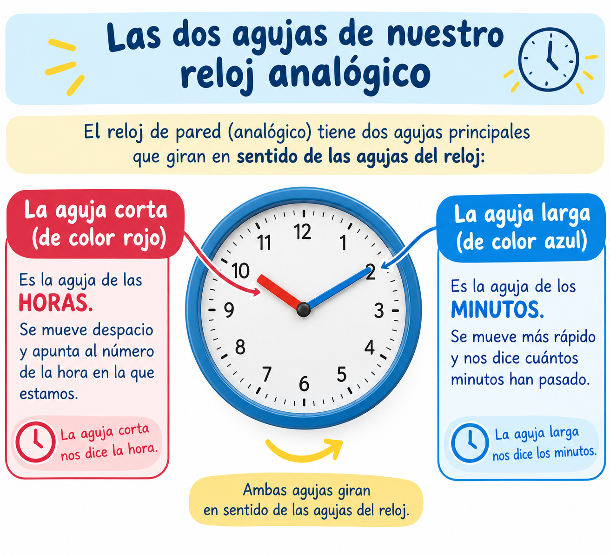
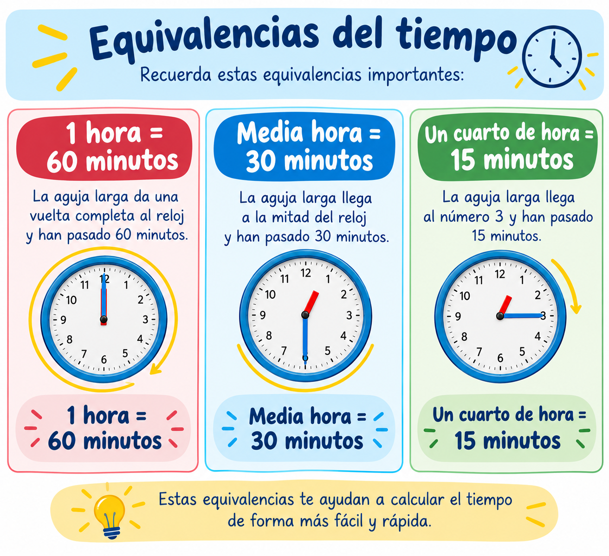
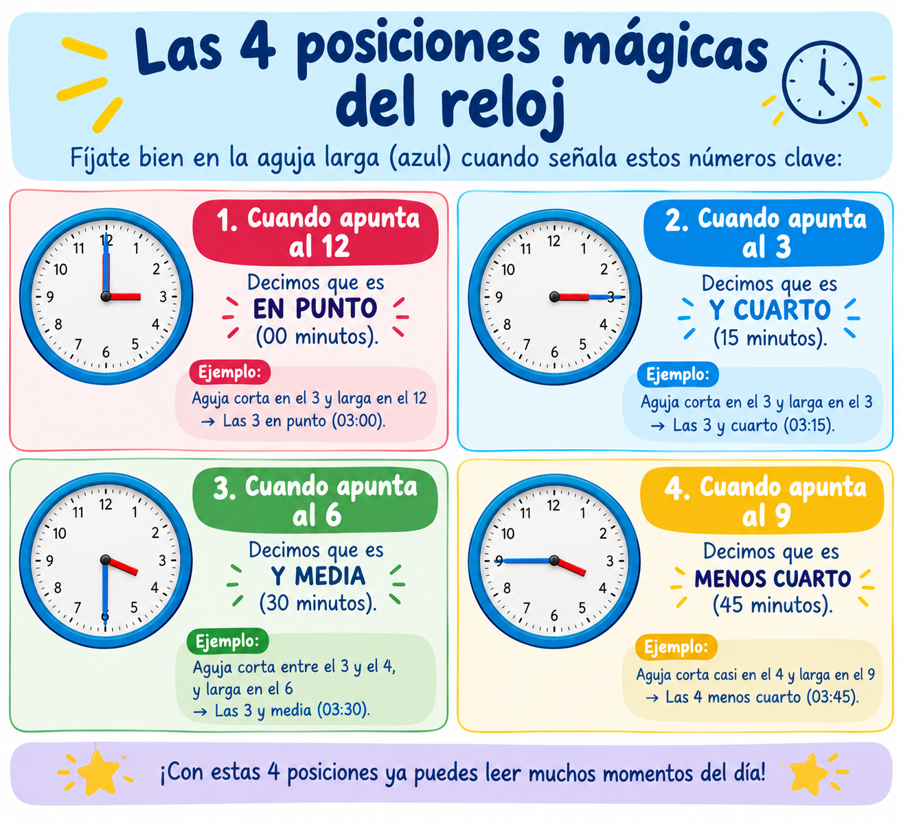

MISIÓN 1- EL ENIGMA DEL RELOJ Y EL TIEMPO
> ¡Bienvenido/a, Detective Matemático! 🕵️♂️⏰
> Para resolver el primer caso del día, necesitas dominar el tiempo. Los detectives no pueden llegar tarde a las pistas. Para ello tenemos que conocer algunos datos importantes sobre los relojes.
> 1. Las agujas de nuestro reloj:
La aguja corta (roja): Nos marca la HORA.
La aguja larga (azul): Nos marca los MINUTOS.

Imagen creada por Salvadora Sánchez mediante inteligencia artificial.chapgpt6.1.CC-BY-SA
> 2. Las equivalencias clave:
1 hora = 60 minutos.
Media hora = 30 minutos.
Un cuarto de hora = 15 minutos.

Imagen creada por Salvadora Sánchez mediante inteligencia artificial.chapgpt6.1. CC-BY-SA
Las 4 posiciones mágicas del reloj
Fíjate bien en la aguja larga (azul) cuando señala estos números clave:
⏰ Cuando apunta al 12: Decimos que es EN PUNTO (00 minutos).Ejemplo: Aguja corta en el 3 y larga en el 12 = Las 3 en punto (03:00).
⏰ Cuando apunta al 3: Decimos que es Y CUARTO (15 minutos).Ejemplo: Aguja corta en el 3 y larga en el 3 = Las 3 y cuarto (03:15).
⏰ Cuando apunta al 6: Decimos que es Y MEDIA (30 minutos).Ejemplo: Aguja corta entre el 3 y el 4, y larga en el 6 = Las 3 y media (03:30).
⏰ Cuando apunta al 9: Decimos que es MENOS CUARTO (45 minutos).Ejemplo: Aguja corta casi en el 4 y larga en el 9 = Las 4 menos cuarto (03:45).

Imagen creada por Salvadora Sánchez mediante inteligencia artificial.chapgpt6.1.CC-BY-SA
¿Cómo leemos el reloj digital?
[ HORA ] : [ MINUTOS ]
El número de la izquierda indica la hora.
El número de la derecha indica los minutos.
Ejemplo: 08:30 Son las 8 horas y 30 minutos (Las ocho y media).